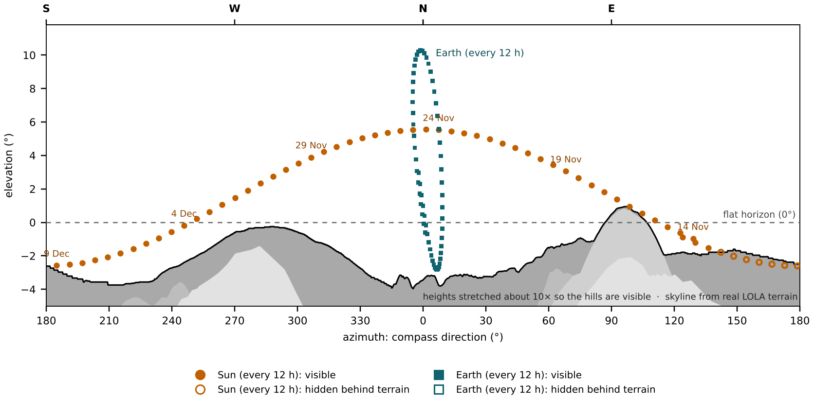

Landing on the Moon's South Pole: Light, Shadow and Line of Sight
To the reader
Several space agencies and companies plan to land near the Moon's south pole in the next few years, and NASA intends to build a long-term base there. Whether a landing succeeds depends to a large degree on two simple questions: can the lander see the Sun, and can it see the Earth? The first decides whether its solar panels can make power. The second decides whether it can talk to people at home.
At the south pole both questions are surprisingly hard to answer. The Sun never climbs more than a degree or two above the horizon, so a hill many kilometres away can cast a shadow over a site for days. Earth also sits low in the sky and can drop out of sight behind a crater rim. This guide explains why, and shows how scientists and mission planners work out the answers from real data.
No previous knowledge of astronomy is assumed. Some sections use simple trigonometry; the worked examples show every step, and the rest of the guide can be followed without them. Each chapter begins with a list of what it covers and ends with a summary and review questions. Answers are given at the back, together with a glossary and a list of references.
Contents
| Chapter 1 | Positions in the sky |
| Chapter 2 | The Sun and Earth in the lunar sky |
| Chapter 3 | Terrain, light and shadow |
| Chapter 4 | Power and communication |
| Chapter 5 | Where the numbers come from |
| Chapter 6 | Choosing a landing site |
| Answers to review questions | |
| Glossary | |
| References |
Chapter 1
Positions in the sky
In this chapter
- How the position of the Sun or Earth in the sky is described with two angles.
- The difference between the horizon and the skyline.
- Why a lander needs to know about both the Sun and the Earth.
- How the whole sky around a site can be drawn as one picture, the panorama.
1.1 Azimuth and elevation
Stand anywhere on the Moon and look at the Sun. To tell someone else where it is, you need two pieces of information: which way to face, and how far to look up. Astronomers give these as two angles.
The azimuth is the compass direction. It is measured in degrees, starting at north (0°) and turning clockwise through east (90°), south (180°) and west (270°). The elevation is the angle above the horizon. Here the horizon means an imaginary flat line at eye level, as if the ground were perfectly level all the way round. An object exactly on that line has an elevation of 0°; an object straight overhead has an elevation of 90°.
Real ground is not flat. Hills, crater rims and mountains rise above the flat horizon in some directions and fall below it in others. The line where the real ground meets the sky is called the skyline. The skyline is different in every direction, so it is described by giving its elevation at each azimuth.
These ideas lead to the single rule on which this whole guide rests. An object is visible from a site when its elevation is greater than the elevation of the skyline in the same direction. If the Sun is 1.5° above the flat horizon but a ridge in that direction rises to 3°, the Sun is hidden.
1.2 What a lander needs
Most landers near the lunar poles run on solar power. Their panels produce electricity only while the Sun is visible, and the lander's batteries must carry it through every period of darkness. A lander also needs to send data home and receive commands. Radio waves travel in straight lines, so a direct link with Earth is only possible while Earth is above the skyline.
For any site and any date, then, the important questions are whether the Sun is above the skyline, whether Earth is above the skyline, and for how long each stays there. The rest of this guide explains how these questions are answered.
1.3 The panorama
A convenient way to see the whole sky around a site at once is to imagine turning slowly on the spot, photographing the skyline in every direction, and laying the photographs side by side. The result is a long strip: a panorama. Its horizontal axis is azimuth, from 0° to 360°, and its vertical axis is elevation.
Once the skyline has been drawn in this way, the positions of the Sun and Earth can be marked on the same strip. Anything drawn above the skyline is visible; anything below it is hidden. Real examples are shown in Chapter 3.
Summary
- A position in the sky is given by two angles: azimuth (compass direction, clockwise from north) and elevation (angle above the flat horizon).
- The skyline is where the real ground meets the sky. Its height changes with direction.
- An object is visible when its elevation is greater than the skyline's elevation at the same azimuth.
- A solar-powered lander needs the Sun above the skyline for power and Earth above the skyline for direct radio contact.
Review questions
- A star has an azimuth of 270°. In which compass direction should you face to see it?
- What is the difference between the horizon and the skyline?
- The Sun has an elevation of 2.0°. In the Sun's direction the skyline has an elevation of 2.4°. Is the Sun visible?
- Why does a direct radio link with Earth require Earth to be above the skyline?
Chapter 2
The Sun and Earth in the lunar sky
In this chapter
- Why the Moon has almost no seasons.
- Why the Sun at the lunar poles never rises more than about 1.5° above the horizon.
- How the Sun moves around the sky at the pole instead of rising and setting.
- Why Earth stays in nearly the same part of the sky but slowly rocks up and down.
- How large the Sun and Earth appear from the Moon.
2.1 A Moon with almost no tilt
Earth's axis of rotation is tilted by 23.4° from the line at right angles to its orbit around the Sun. This tilt gives Earth its seasons: for half of the year the northern half of the planet leans towards the Sun, and for the other half it leans away.
The Moon's axis is tilted by only about 1.5° from the line at right angles to the plane in which Earth and Moon travel around the Sun. As a result the Moon has almost no seasons. At any given place on the Moon, the Sun follows nearly the same path through the sky in every month of the year.
2.2 The Sun at the pole
Imagine standing exactly on the Moon's south pole. The axis of rotation points straight up through your feet, so your horizon lies in the same plane as the Moon's equator. Sunlight always arrives from within about 1.5° of that plane, because the axis is tilted by no more than that. The Sun can therefore never be more than about 1.5° above your horizon.
The same reasoning applies on Earth, where the angle can reach 23.4°. That is why the midnight Sun near Earth's poles climbs much higher than the Sun at the Moon's poles ever does. A useful rule follows from the figure:
maximum elevation of the Sun at a pole ≈ tilt of the axis (2.1)
2.3 A Sun that circles instead of rising and setting
Near the Moon's equator the Sun behaves much as it does on Earth, except slowly: it rises, climbs high and sets, and one full day lasts about 29.5 Earth days. At the pole the picture is different. The Moon still turns once every 29.5 days, but because the Sun stays close to the horizon, it does not go up and down. Instead it travels all the way round the observer, close to the horizon, once in each 29.5-day period.
Worked example 2.1
How fast does the Sun move around the sky at the pole?
The Sun completes one circle of 360° in 29.53 days. Its rate of movement is therefore 360° ÷ 29.53 days = 12.2° per day, or about 0.5° per hour. Since the Sun's disc is about 0.5° wide (Section 2.6), it moves by roughly its own width every hour.
A short distance from the pole the path is no longer level. During each 29.5-day circle the Sun rises a little on one side of the sky and sinks a little on the other. The size of this rise and fall is roughly equal to the observer's distance from the pole, measured in degrees of latitude. At 89°S, one degree from the pole, the Sun's elevation swings by about 1° above and below its average; at 85°S it swings by about 5°.
2.4 Earth in the lunar sky
The Moon always keeps the same face turned towards Earth. Seen from the Moon, Earth therefore stays in almost the same place in the sky. From the centre of the near side it hangs nearly overhead; from the poles it sits close to the horizon, in the direction of the near side.
Earth does not stay perfectly still, however. Because the Moon's orbit is slightly elliptical and slightly tilted, the Moon appears to rock gently to and fro as seen from Earth. This effect is called libration. Seen from the Moon, it makes Earth move back and forth in the sky by up to about 7° in the north–south direction and about 8° in the east–west direction, over a cycle of about a month.
At the south pole, where Earth sits near the horizon, the north–south part of this movement makes Earth rise and sink. For about half of each month Earth is above the flat horizon; for the other half it is below it. A crater rim or ridge in Earth's direction can hide it for longer still.
2.5 A note on parallax
Earth is close enough to the Moon that its position in the lunar sky depends slightly on where the observer stands. Seen from the edge of the Moon's visible disc rather than its centre, Earth's direction shifts by about a quarter of a degree; between two opposite edges the difference is about half a degree. This shift with the observer's position is called parallax. For the Sun, which is about 390 times farther away, the effect is far too small to matter. Careful calculations therefore work out Earth's direction for the exact site rather than for the centre of the Moon.
2.6 Discs, not points
The Sun and Earth are not points of light but discs of a definite size. The angle a disc covers, its angular diameter, depends on its true diameter D and its distance d:
angular diameter = 2 × arctan (D / 2d) (2.2)
Worked example 2.2
How large do the Sun and Earth look from the Moon?
Earth has a radius of 6,371 km and is about 384,400 km from the Moon. Its angular diameter is 2 × arctan (6,371 / 384,400) = 1.90°.
The Sun has a radius of 696,000 km and is about 149.6 million km away. Its angular diameter is 2 × arctan (696,000 / 149,600,000) = 0.53°.
Earth therefore appears about three and a half times as wide as the Sun.
When a disc is partly behind a ridge, different rules give different answers. Near the pole, where the Sun and Earth move slowly against the skyline, the choice of rule can change the time of sunset or "earthset" by hours. Any calculation should therefore state which rule it uses.
Summary
- The Moon's axis is tilted by only about 1.5°, so the Moon has almost no seasons.
- At the poles the Sun is never more than about 1.5° above the flat horizon. It circles the observer once every 29.5 days, at about 12° per day.
- A little away from the pole the Sun rises and falls during each circle by roughly the distance from the pole in degrees.
- Earth stays in nearly the same part of the lunar sky, but libration makes it move by several degrees. At the pole this makes Earth rise above and sink below the horizon each month.
- The Sun appears 0.53° wide and Earth 1.90° wide. Calculations must state whether a body counts as visible when its centre, any part or all of it is above the skyline.
Review questions
- Why does the Moon have almost no seasons?
- Mars's axis is tilted by about 25°. Roughly how high could the Sun climb above the horizon at the Martian poles?
- At the Moon's south pole, how many degrees does the Sun move around the sky in 3 days?
- An observer stands at 87°S. By roughly how much does the Sun's elevation rise and fall during one 29.5-day circle?
- Use Equation 2.2 to find the angular diameter of the Moon seen from Earth. (Moon's radius 1,737 km; distance 384,400 km.)
Chapter 3
Terrain, light and shadow
In this chapter
- Why a distant ridge can shade a polar site for days.
- How some crater floors can stay dark for billions of years.
- How to read a real panorama of the lunar sky.
- Why small errors in the skyline cause large errors in timing near the pole.
3.1 Long shadows
When the Sun is low, shadows are long. On the Moon there is no air to scatter light into the shadows, so anything in shadow is truly dark. The length L of the shadow cast by a ridge of height h when the Sun has elevation e is given, over level ground, by
L = h / tan e (3.1)
Worked example 3.1
A ridge rises 1,000 m above the surrounding plain. How long is its shadow when the Sun is 1° above the horizon?
L = 1,000 m / tan 1° = 1,000 m / 0.01746 = 57,300 m, or about 57 km.
A single ridge can therefore shade ground more than 50 km away. (The curvature of the Moon shortens real shadows somewhat; Section 5.6 shows how to allow for it.)
High ground near the poles, such as crater rims and isolated mountains, can be lit for most of the month because it rises above the shadows of its surroundings. Low ground behind high ground may be dark for days or weeks at a time.
3.2 Permanent shadow and ice
Some crater floors near the poles lie so deep that the low Sun never reaches them at all. These are called permanently shadowed regions. Without sunlight they remain extremely cold, colder in places than the surface of Pluto. Water and other substances that arrive there, for example in comet impacts, can stay frozen for very long periods.
This ice is one of the main reasons for going to the south pole. It could supply drinking water, oxygen and rocket fuel for future crews. The result is a landscape of extremes: some high points are lit for most of the year, while nearby crater floors have not seen the Sun for perhaps billions of years.
3.3 Reading a real panorama
Figures 3.2 and 3.3 are panoramas drawn from real data, in the form introduced in Section 1.3. The skyline was calculated from NASA's laser measurements of the lunar surface (Chapter 5). The positions of the Sun and Earth were calculated for every 12 hours from 14 November to 14 December 2026. Because the hills are only a few degrees high, the vertical scale has been stretched to make them visible.

Look first at the circles in Figure 3.2. The Sun travels once round the sky, from right to left as its azimuth decreases, and stays between about 1° and 2° above the flat horizon, as Chapter 2 predicts. At this site the skyline is lower still in every direction, because the site stands on high ground. The Sun therefore never sets during this month.
Now look at the squares. Earth hardly moves sideways but traces a tall, narrow loop, rising to about 6° and sinking to about −7°. This is libration (Section 2.4). The open squares show the times when Earth has sunk behind the ridge. For roughly half of the month, a lander here could not talk to Earth directly.

Figure 3.3 shows a site about 4° from the pole. Here the Sun's path rises and falls by several degrees during the month (Section 2.3). Notice that some circles lie below the flat horizon but are still filled: the site is on top of a mountain about 5 km high, so the skyline is lower than the flat horizon and the Sun remains visible. Near the right-hand edge, a few open circles mark the hours when the Sun is behind a hill to the east; this produces one night of about three days. Earth, near north, stays above the skyline all month.
3.4 Small errors, large consequences
Near the pole the Sun's elevation changes very slowly. As a result, a small error in the height of the skyline can move the calculated time of sunrise or sunset by many hours.
Worked example 3.2
At 89°S, how long does it take the Sun's elevation to change by 0.1°?
At 89°S the Sun's elevation rises and falls by about 1° on either side of its average over 29.53 days. For a regular up-and-down motion of size A and period T, the fastest rate of change is 2πA/T. Here this is 2π × 1° / 29.53 days = 0.213° per day, or 0.0089° per hour.
Even at this fastest rate, a change of 0.1° takes 0.1 / 0.0089 = 11 hours. An error of 0.1° in the skyline can therefore shift the predicted sunset by about 11 hours.
For this reason, careful calculations give sunrise and sunset near the poles as a window of time rather than a single exact minute.
Summary
- With the Sun 1° up, a 1,000 m ridge casts a shadow more than 50 km long.
- Some polar crater floors are never lit. They are extremely cold and can hold water ice.
- A panorama shows at a glance when the Sun and Earth are above or below the skyline at a site.
- Near the pole the Sun's elevation changes so slowly that an error of 0.1° in the skyline can move sunset by about 11 hours.
Review questions
- Use Equation 3.1 to find the length of the shadow of a 500 m hill when the Sun is 2° above the horizon.
- Why are shadows on the Moon completely dark, while shadows on Earth are not?
- In Figure 3.2, during which part of the month could a lander at Connecting Ridge not talk directly to Earth?
- In Figure 3.3 the Sun is sometimes below the flat horizon but still visible. Explain how this is possible.
- Why would a calculation that gives sunset at the pole to the exact minute be misleading?
Chapter 4
Power and communication
In this chapter
- Why solar panels at the poles are mounted upright.
- Why the longest night matters more than the average amount of sunlight.
- What is needed for a direct radio link between a lander and a station on Earth.
4.1 Solar panels and a low Sun
Near the Moon, sunlight carries about 1,361 watts of power through each square metre facing the Sun. This figure is called the solar constant. A panel collects the full amount only when it faces the Sun directly. If the light strikes the panel at an angle i from the line at right angles to its surface, the power received per square metre is
P = 1,361 W/m² × cos i (4.1)
Worked example 4.1
The Sun is 1.5° above the horizon. Compare a panel lying flat with one standing upright and facing the Sun.
For the flat panel, the light arrives 88.5° from the line at right angles to the panel: P = 1,361 × cos 88.5° = 1,361 × sin 1.5° = 36 W/m².
For the upright panel, i = 1.5°: P = 1,361 × cos 1.5° = 1,360 W/m².
The upright panel receives almost 40 times as much power. This is why landers designed for the poles carry their panels vertically, often on masts that can turn to follow the Sun around the sky.
4.2 Batteries and the longest night
When the Sun is hidden, a lander must live on its batteries. Keeping its electronics warm enough to survive the cold uses a great deal of energy, so the batteries can only last a limited time. A useful way to describe this is the number of days the batteries can support the lander without sunlight.
It is tempting to judge a site by the average fraction of time it is sunlit. Figure 4.2 shows why this can be dangerous.
Both sites have the same average, yet only one is safe. What matters for survival is the length of the longest night after landing, compared with how long the batteries last. A good site analysis therefore follows the light hour by hour from the planned landing date, rather than using an average.
4.3 Talking to Earth
A direct radio link needs a clear straight line between the lander's antenna and an antenna on Earth. Two conditions must hold at the same time. Earth must be above the lunar skyline as seen from the lander; and the Moon must be above the horizon as seen from the station on Earth, usually by several degrees, so that the signal clears nearby buildings and the thickest part of the atmosphere.
Because Earth turns once a day, each station sees the Moon for only part of the day. Space agencies therefore use several stations spread around the globe. NASA's Deep Space Network has large antennas in California, Spain and Australia, and South Korea operates a 35 m deep-space antenna at Yeoju, built to communicate with its lunar orbiter Danuri. When a lander cannot see Earth directly, it can still communicate by relaying signals through a satellite orbiting the Moon.
Summary
- Power from a panel is proportional to cos i. With a low Sun, upright panels collect about 40 times as much as flat ones.
- Two sites with the same average sunlight can differ greatly in the length of their longest night. Survival depends on the longest night, not the average.
- A direct radio link requires Earth above the lunar skyline and the Moon above the ground station's horizon at the same time.
Review questions
- A panel is tilted so that sunlight strikes it 60° from the line at right angles to its surface. How much power does it receive per square metre?
- Site C is sunlit 80% of the time; site D is sunlit 65% of the time. Is site C necessarily the better choice? Explain.
- A lander's batteries last five days. After landing, the longest night at the site is 4.5 days. Is the site safe? What other information would you want?
- Why does a lunar mission need more than one ground station on Earth?
Chapter 5
Where the numbers come from
In this chapter
- How the positions of the Sun and Earth are calculated, and what can go wrong.
- Why these positions alone cannot tell you whether a site is dark.
- How the height of the lunar surface is measured from orbit.
- What an elevation model is, and why the size of its squares matters.
- How a skyline is calculated from an elevation model.
5.1 Ephemerides
A table giving the positions of the Sun, Moon and planets over time is called an ephemeris (plural ephemerides). Two widely used sources come from NASA's Jet Propulsion Laboratory (JPL). SPICE is a free software toolkit that reads data files, called kernels, and calculates positions on your own computer. Horizons is an online service: you send a request giving the target, the place on the Moon and the dates, and JPL's computers send back the azimuth and elevation at each time step.
Horizons has been available since 1996. Since an update in 2021 it can place points on the Moon's surface to within tens of centimetres. The two methods agree closely, and many projects compute positions with SPICE and then check a sample against Horizons.
5.2 Frames and clocks
Two details catch out many newcomers. The first is the reference frame: the set of axes that defines where north is and where longitudes are measured from. There are two common frames for the Moon, and the same latitude and longitude can refer to points about 875 m apart in the two. Maps of the lunar surface made from laser data use the frame called MOON_ME, so positions should be given in that frame when they are combined with those maps.
The second is the time scale. Everyday clocks keep Coordinated Universal Time (UTC), but ephemerides are calculated in Barycentric Dynamical Time (TDB), which currently runs about 69 seconds ahead. In that time the Sun moves about 0.01° in the lunar sky: small, but not always negligible near the pole (Section 3.4).
5.3 What an ephemeris cannot tell you
An ephemeris measures elevation from a perfectly flat horizon. It knows nothing about the hills around a site. It can report that the Sun is 1° up, while a ridge in that direction rises to 3° and the site is in darkness.
Figure 5.4 shows how large the difference can be. The circles and squares are positions from Horizons for a point on the inner wall of Shackleton crater, about 1.8 km inside the rim. The dashed line is the real skyline at that point, calculated from laser measurements as described below.

Judged against the flat horizon alone, Earth is up from 18 to 29 November. Judged against the real skyline, Earth never appears at all during the month, and about two-thirds of the Sun's positions are hidden behind the crater rim. Reliable answers need both the ephemeris and the shape of the ground.
5.4 Measuring height with a laser
NASA's Lunar Reconnaissance Orbiter (LRO) has been circling the Moon since 2009. One of its instruments, the Lunar Orbiter Laser Altimeter (LOLA), fires short pulses of laser light at the surface and times how long each pulse takes to return. Since light travels at a known speed c, the distance to the ground is
distance = c × t / 2 (5.1)
where t is the round-trip time. The position of the spacecraft is known accurately from tracking, so subtracting this distance gives the height of the ground beneath it. Over many years LOLA has made billions of such measurements, especially near the poles, where LRO's orbits cross.
Worked example 5.1
LRO is 50 km above the ground. How long does a laser pulse take to return?
Rearranging Equation 5.1, t = 2 × distance / c = 2 × 50,000 m / (3.0 × 108 m/s) = 3.3 × 10−4 s, or about a third of a millisecond. To measure height to within 1 m, the instrument must time the pulse to within about 7 billionths of a second.
5.5 Elevation models
The individual measurements are turned into a digital elevation model (DEM): a grid of squares laid over the surface, with one number, the height of the ground, stored in each square. The squares are called pixels.
Because each pixel holds only one number, any feature smaller than a pixel is averaged away. A grid of large pixels makes small rocks and bumps vanish, and the map records that ground as flat.
The size of the pixels therefore matters, particularly close to a landing site. Figure 5.8 compares three pixel sizes with a landing zone 100 m across.
Several elevation models of the south pole have been made from LOLA data and are freely available from NASA's Planetary Geodesy Data Archive (PGDA). Table 5.1 lists some of them. Each is identified by its product number in the archive.
| Product | Year | Content |
|---|---|---|
| PGDA 69 | 2011 | Average illumination at the poles over an 18.6-year cycle (Mazarico et al., 2011) |
| PGDA 78 | 2021 | Elevation models with 5 m pixels around candidate landing sites |
| PGDA 81 | 2023 | Elevation model with 5 m pixels from 87°S to the pole |
| PGDA 90 | 2023 | Wider elevation model reaching to 80°S |
| PGDA 104 | 2025–26 | Sharper models combining LOLA heights with LROC camera images |
Most pixels in these models are not measured directly; they are filled in between the tracks of the laser. Good models therefore also record how many measurements fell in each pixel and the likely error in each height.
5.6 Calculating the skyline
To find the skyline at a site, a computer starts at the site and steps outwards along a straight line in one direction, reading the height of the ground from the elevation model at each step. For each point it calculates the angle of elevation from the observer. The largest angle found along the line is the height of the skyline in that direction. Repeating this for many directions, often 720 of them (one every 0.5°), gives the complete skyline, known as the horizon mask.
Because the Moon is a sphere, distant ground curves away below the observer. Let the observer be at distance r1 from the Moon's centre, and a point of terrain at distance r2, separated from the observer by an angle θ measured at the Moon's centre (θ = ground distance ÷ Moon's radius, in radians). The elevation angle e of the terrain point is then given by
tan e = (r2 cos θ − r1) / (r2 sin θ) (5.2)
Worked example 5.2
A ridge 1,500 m higher than the observer lies 20 km away. Find its elevation angle, using a lunar radius of 1,737.4 km.
θ = 20 / 1,737.4 = 0.01151 rad. Take r1 = 1,737.4 km and r2 = 1,738.9 km.
r2 cos θ − r1 = 1,738.9 × 0.999934 − 1,737.4 = 1.385 km.
r2 sin θ = 1,738.9 × 0.01151 = 20.02 km.
tan e = 1.385 / 20.02 = 0.0692, so e = 3.96°.
Ignoring curvature (tan e = 1.5 / 20) would give 4.29°, an error of a third of a degree. Near the pole this would shift sunrise and sunset by more than a day (compare Worked example 3.2).
5.7 Averages and specific dates
Maps of average illumination, such as PGDA 69, give a single number for each spot: the percentage of time it is sunlit over many years. They are useful for choosing a general region. They cannot say what will happen after a particular landing date, and, as Section 4.2 showed, they hide the length of the longest night.
Summary
- Ephemerides give the positions of the Sun and Earth. SPICE computes them locally; Horizons computes them online.
- Positions must use the right reference frame (MOON_ME for laser-based maps) and time scale.
- Ephemerides measure from a flat horizon and cannot by themselves say whether a site is dark.
- LOLA measures ground height by timing laser pulses. The results are stored as elevation models, grids of pixels each holding one height.
- A horizon mask is found by tracing lines outwards from a site and keeping the steepest elevation angle along each, allowing for the Moon's curvature.
Review questions
- What is an ephemeris?
- Why might a calculation go wrong if positions given in one lunar reference frame are combined with a map made in another?
- A laser pulse returns after 2.0 × 10−4 s. How far away is the ground?
- Why is an elevation model with 80 m pixels unsuitable for comparing spots within a landing zone 100 m across?
- In Figure 5.4, Horizons shows Earth above the horizon from 18 to 29 November, yet Earth is never visible from the site. Explain why.
Chapter 6
Choosing a landing site
In this chapter
- What recent landings near the pole have shown.
- Why a landing site is a zone, not a point.
- Why the lighting at the moment of landing matters.
- How the ideas in this guide combine into a site comparison.
6.1 Lessons from recent landings
Between 2024 and 2025 three robotic landers reached the Moon under NASA's Commercial Lunar Payload Services programme. Their results illustrate the difficulties described in this guide.
Odysseus and Athena both landed near the south pole and both ended up on their sides. Athena came to rest in a cold, shadowed crater and could not generate enough power to operate for long. Its builders, Intuitive Machines, pointed to the polar terrain and the low Sun: long shadows and dim light made it hard for the lander's navigation system to judge the ground on the way down. Blue Ghost, built by Firefly Aerospace, showed what a precise landing looks like, but it landed on a flat plain far from the pole, where the light was much easier.
6.2 The landing zone
No lander touches down exactly on its target point. Mission plans therefore specify a target and an allowed error. For its first crewed south-pole landing, NASA's 2024 plans required the lander to come down within 6° of the pole and within 100 m of its target, with suitable lighting during the approach. As of November 2026 NASA has not published a newer figure for later crewed missions, so 100 m remains a useful guide.
The important consequence is that the whole zone, not just the target point, must be acceptable. As Figure 5.8 showed, checking differences within a zone 100 m across requires elevation models with pixels of a few metres.
6.3 Lighting during the approach
Most of this guide concerns light after landing. The light during the last minutes of descent also matters. Many landers use cameras to find a safe spot to touch down. If the Sun is very low, or shining from a poor direction relative to the approach, long shadows can hide hazards or make the ground hard to interpret, as Athena's experience suggests.
The same ephemeris and terrain data used elsewhere in this guide can answer this, simply by checking one more moment: the planned time of landing.
6.4 Putting it together
A comparison of candidate sites and dates can now be built from the ideas in the previous chapters. For each candidate site, a planner:
- calculates the horizon mask from a suitable elevation model, using fine data near the site and wider data farther out (Section 5.6);
- calculates the positions of the Sun and Earth for every hour of the mission, for the exact site, in the correct frame and time scale (Sections 5.1 and 5.2);
- compares each position with the skyline in the same direction, stating the rule used for partly hidden discs (Sections 1.1 and 2.6);
- summarises the result in the numbers that matter: the percentage of time sunlit, the longest night compared with battery life, the time with Earth in view, and the time until the next sunset or earthset (Chapter 4);
- repeats the comparison across the whole landing zone, at the moment of landing, and for later dates in case the launch is delayed (Sections 6.2 and 6.3).
Because sunset times near the pole are sensitive to small errors (Section 3.4), results should be presented with their uncertainty, for example as windows of time.
Classroom activity: which site for a solar lander?
A small solar-powered lander will arrive at the lunar south pole on 14 November 2026 and must operate until 14 December. Its batteries can keep it alive for three days without sunlight. It has no relay satellite, so it must send its data directly to Earth at least once every three days.
Use Figure 3.2 (Connecting Ridge) and Figure 3.3 (Malapert Massif) to compare the two sites. Each symbol is 12 hours apart.
- For each site, find the longest run of hidden Sun positions (open circles). How long is the longest night? Would the batteries last through it?
- For each site, find the longest run of hidden Earth positions (open squares). Does the lander meet its three-day contact rule?
- Which site would you choose? Write two or three sentences explaining your choice.
- Suggest one further piece of information you would want before making a final decision.
Teachers: there is no single right answer to question 3. Connecting Ridge stays sunlit all month but loses sight of Earth from 30 November to 13 December, far longer than three days. Malapert keeps Earth in view all month but has one night of a little over three days, starting on 9 December, slightly longer than the batteries last. Each site fails one requirement. Good answers weigh which failure is easier to fix: for example, a relay satellite would rescue Connecting Ridge, and a slightly larger battery would rescue Malapert.
Summary
- Recent polar landings show how terrain and low sunlight make landing difficult.
- A landing site is a zone. NASA's 2024 plan used a zone of 100 m around the target, and every part of it must be acceptable.
- Lighting at the moment of landing matters as well as lighting afterwards.
- A full comparison combines a horizon mask, hourly positions of the Sun and Earth, a visibility rule and a summary of sunlight, darkness and Earth contact.
Review questions
- Why must a landing zone be checked as a whole, rather than only at its centre?
- How might a low Sun make a landing more dangerous, even if the site will be well lit after landing?
- A launch is delayed by one week. Why might a site that was good for the original date no longer be suitable?
Answers to review questions
Chapter 1
- West.
- The horizon is an imaginary flat line at eye level; the skyline is where the real ground meets the sky, and its height varies with direction.
- No. Its elevation (2.0°) is less than the skyline's (2.4°) in that direction.
- Radio waves travel in straight lines, so the path from lander to Earth must not be blocked by terrain.
Chapter 2
- Its axis is tilted by only about 1.5°, so the Sun's path hardly changes through the year.
- About 25°, by Equation 2.1.
- About 3 × 12.2° = 37°.
- About 3°, roughly equal to its distance from the pole.
- 2 × arctan (1,737 / 384,400) = 0.52°.
Chapter 3
- L = 500 / tan 2° = 500 / 0.0349 = about 14 km.
- The Moon has no air to scatter sunlight into the shadows.
- When the squares are open: from the start of the period until 16 November, and again from 30 November until 13 December, while Earth's loop sinks behind the ridge.
- The site is on top of a mountain, so the skyline lies below the flat horizon, and the Sun can be below 0° yet above the skyline.
- The Sun's elevation changes so slowly that a small error in the skyline moves the crossing time by hours (Worked example 3.2).
Chapter 4
- 1,361 × cos 60° = 680 W/m².
- Not necessarily. Site C could have one long night that exceeds the lander's battery life, while site D's darkness is broken into short nights.
- Only just: the margin is half a day. You would want to know how accurate the predicted night length is (Section 3.4), and what happens if the landing date slips.
- Each station sees the Moon for only part of each day as Earth turns.
Chapter 5
- A table of the positions of the Sun, Moon and planets over time.
- The same coordinates can refer to points about 875 m apart in the two frames, so the site would be placed in the wrong spot on the map.
- Distance = c t / 2 = 3.0 × 108 × 2.0 × 10−4 / 2 = 30 km.
- The whole zone falls within one or two pixels, so every spot in it has the same height on the map.
- Horizons measures from a flat horizon. At this site the crater rim rises well above Earth's highest elevation, so Earth stays hidden.
Chapter 6
- The lander may come down anywhere within the zone, and conditions can change greatly over tens of metres near the pole.
- Long shadows can hide hazards and make it hard for cameras to judge the ground during descent.
- The Sun and Earth will be in different positions a week later, so the site may face a long night or lose Earth contact at the new time.
Glossary
- Angular diameter
- The angle a disc such as the Sun or Earth covers in the sky.
- Azimuth
- Compass direction, measured in degrees clockwise from north.
- Digital elevation model (DEM)
- A grid of squares (pixels), each holding the height of the ground.
- Elevation
- The angle of an object above the flat horizon.
- Ephemeris
- A table of the positions of bodies in space over time.
- Horizon
- An imaginary flat line at eye level, as if the ground were level all round.
- Horizon mask
- The height of the skyline in every direction around a site.
- Horizons
- JPL's online service for calculating ephemerides.
- Libration
- The slow apparent rocking of the Moon, which makes Earth move by several degrees in the lunar sky.
- LOLA
- Lunar Orbiter Laser Altimeter, the instrument on LRO that measures ground height.
- LRO
- Lunar Reconnaissance Orbiter, a NASA spacecraft orbiting the Moon since 2009.
- LROC
- The camera system on LRO.
- Panorama
- The skyline around a site drawn as a strip, with azimuth across and elevation upwards.
- Parallax
- The change in an object's apparent direction caused by a change in the observer's position.
- Permanently shadowed region
- Ground near a pole that the Sun never reaches.
- PGDA
- NASA's Planetary Geodesy Data Archive, which distributes lunar elevation and illumination products.
- Reference frame
- The set of axes used to give positions, defining north and the zero of longitude.
- Skyline
- The line where the real ground meets the sky.
- Solar constant
- The power of sunlight per square metre at Earth's (and the Moon's) distance from the Sun: about 1,361 W/m².
- SPICE
- A software toolkit from JPL for calculating positions of bodies in space.
- TDB, UTC
- Two time scales. UTC is everyday clock time; TDB is used in ephemerides and runs about 69 seconds ahead.
References
- Mazarico, E., Neumann, G. A., Smith, D. E., Zuber, M. T. and Torrence, M. H. (2011). Illumination conditions of the lunar polar regions using LOLA topography. Icarus, 211, 1066–1081.
- NASA Goddard Space Flight Center. Planetary Geodesy Data Archive (PGDA), products 69, 78, 81, 90 and 104. pgda.gsfc.nasa.gov
- NASA Jet Propulsion Laboratory. Horizons System. ssd.jpl.nasa.gov/horizons
- NASA Navigation and Ancillary Information Facility. SPICE Toolkit. naif.jpl.nasa.gov
- NASA Planetary Data System, Geosciences Node. LRO LOLA data. pds-geosciences.wustl.edu
- NASA (2024). Artemis landing system update: south pole landing requirements. NASA Technical Reports Server.
- NASA. Artemis IV mission overview. nasa.gov/mission/artemis-iv
- Firefly Aerospace (2 March 2025). Firefly's Blue Ghost lunar lander softly touched down in Mare Crisium. Press release.
- Intuitive Machines (2025). IM-2 mission update. Press release.
- Korea Aerospace Research Institute. Korea Deep Space Antenna, Yeoju.
Figures 3.2, 3.3 and 5.4 were made for this guide from NASA LOLA elevation models (PGDA) and JPL ephemerides. Photographs on this website are from NASA. This guide is not affiliated with or endorsed by NASA.